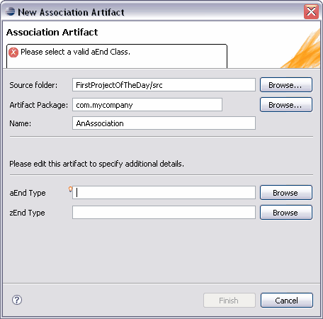
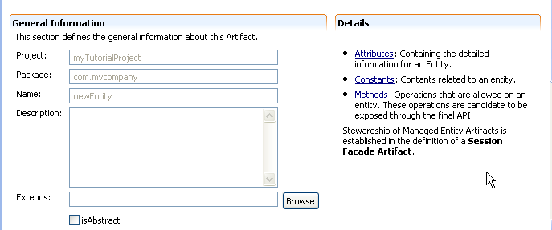

First, please make sure the Tigerstripe Perspective is active.
The New Association Artifact wizard allows the creation of new Association Artifacts within a Tigerstripe Project. The wizard can be open from either the  button from the drop down Tigerstripe icon in the toolbar or from the Tigerstripe->New->Association entry in the top menubar. The following dialog will appear:
button from the drop down Tigerstripe icon in the toolbar or from the Tigerstripe->New->Association entry in the top menubar. The following dialog will appear:

As with any other type of Tigerstripe Artifact wizard, the New Association Artifact wizard requires a set of parameters before the Association artifact can be successfully created.
- Source Project: the source project in which the association artifact shall be created. In most cases, Tigerstripe is able to pre-populate this field based on the context. If not populated, or if the wrong project was selected, the Browse button can be used to select the correct Tigerstripe project in which the artifact shall be created.
- Artifact Package: each artifact is created within the scope of a package. This field shall contain a valid package name. All non-valid names will be rejected and flagged by the wizard.
- Artifact Name: a valid name for the artifact. This name uniquely identifies the artifact within the scope of its package. All non-valid artifact names will be rejected and flagged by the wizard.
- aEnd Type: the fully qualified name of the artifact at the starting end of this association
- zEnd Type: the fully qualified name of the artifact at the terminating end of this association.
Once all the required parameters are filled in, press the Finish button to create the corresponding Association artifact. Upon creation, a corresponding icon will appear in the Tigerstripe Explorer, and the main editor page will be set to the overview tab of the corresponding artifact editor. From this page, the entity artifact can be further edited and additional information can be filled in.
Editing an Entity Artifact
First, please make sure the Tigerstripe Perspective is active.
To edit an existing Association Artifact, simply select its corresponding entry in the Tigerstripe Explorer, and double-click to open it in an editor. Association Artifacts are made of the following details:
- General Information: common to all Artifacts, the general information section covers high level information such as description.
- Detail: association end details can be defined on this artifact.
General Information

The General Information section contains the following information:
- Project: the identifier of the Tigerstripe project where this artifact is defined, as it appears in the Tigerstripe Explorer view. This field cannot be edited. For information on how to move artifacts across projects in the workspace, please visit this section.
- Package: the name of the package where the artifact is defined. This field cannot be edited. For more information on how to move artifacts across packages, please refer to this section.
- Name: the name of the artifact. This field cannot be edited. For more information on how to rename artifacts, please refer to this section.
- Description: a textual description of the artifact. This field can include any HTML code and should document the artifact. It is passed to the corresponding webpage when a project is published to website. For more details on Artifact documentation, please refer to this section.
- Extends: the fully qualified name of the super-artifact (ie. the name of the artifact being extended by the current artifact). This is how inheritance is achieved between artifacts. For more information about inheritance within Tigerstripe models, please refer to this section.
Association End Details
To edit this association's end details, expand the Details section. The section looks as shown below:
Each end of the association can be further edited. In particular you will find the following details for each end:
- Name: The name of that end
- Type: the fully qualified name of this end of the association
- Aggregation: the aggregation type for this end of the association. The usual aggregation types are supported: none, shared, composite.
- Multiplicity: the multiplicity for this end of the association. Fixed multiplicities only are supported: 0, 0..1, 0..*, 1..*, *
- Changeable: whether this end of the association shall be changeable. The following types are supported: none, frozen, addOnly.
- isNavigable: whether this end of the association shall be navigable.
- isOrdered: whether this end of the association shall be ordered.